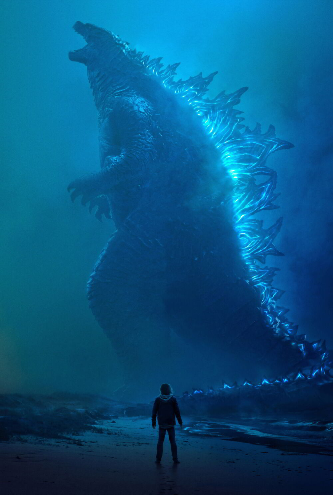

About Godzilla

Godzilla (ゴジラ Gojira?), also dubbed Titanus Gojira, is a giant reptilian daikaiju created by Legendary Pictures and (alongside Kong) is one of the two main protagonists of the MonsterVerse, first appearing in the 2014 film, Godzilla.
Afterwards, Godzilla briefly appears in the post-credits scene of the 2017's Kong: Skull Island, making a cameo appearance as two cave paintings and roaring as the film concludes.
illa reappears in his 2019 sequel, Godzilla: King of the Monsters, where he encounters Rodan, Mothra, Ghidorah, and several other Titans.
Following 2019's monstrous clash, Godzilla met and fought against Kong. Eventually, the two form an alliance in an attempt to defeat Mechagodzilla in the 2021's Godzilla vs. Kong.
Godzilla returns in Monarch: Legacy of Monsters, documenting an era of time following his climactic battle with the M.U.T.Os in 2014. He returned in the sequel, Godzilla x Kong: The New Empire..
History
In 1954, an American nuclear submarine unknowingly awakened Godzilla when it reached the lower depths of the ocean,
drawing him to the surface in search of new sources of radiation. Godzilla attacked and fed on American and Soviet
nuclear submarines in the South Pacific Ocean, with each nation believing the other was responsible for the attacks.
When Godzilla's existence became known, the American military began detonating a series of nuclear bombs in the
Marshall Islands to try and kill the creature, under the guise of nuclear testing. On March 1st, 1954, Godzilla was
lured ashore at Bikini Atoll, where the American military detonated their first-ever dry-fuel hydrogen bomb, code-named
Castle Bravo, in an attempt to kill him, but Godzilla survives and vanishes soon afterward, and the United States covers
up all evidence of his existence. A scientific organization called Monarch was formed to study Godzilla and any other
supersized "hyperfauna" like him, and continued to search for him in the following decades.
Personality
In Godzilla, Godzilla's behavior is that of a territorial animal, Ishiro Serizawa theorized that Godzilla is the
driving force to restore balance to nature whenever that balance is disrupted, suggesting that he essentially
considers the entire Earth to be his territory.
However, unlike previous incarnations, Godzilla doesn't blatantly
attack or plow through ships at sea simply because they're there, in fact, with larger ships like aircraft carriers,
he simply dives under them, even when the military launched a combined forces assault to stop him, he didn't react or
fight back, and simply continued to hunt the MUTOs, even when he was being flanked by four naval ships. As opposed to
any sort of morality, it appears to be that he simply considers humans to be tiny and insignificant and does not care
about their general well-being but at the same time does not consider them worth destroying even though they, without
harming him at all, fire at him nonstop.
Godzilla does not seem to destroy on purpose, even when he destroyed the Golden
Gate Bridge, it did not appear to be intentional, but just him reacting from being hit in the gills by explosives. He
displays little interest in humans and focuses his attention entirely on the MUTOs. His supposed disinterest in the
well-being of humans may be caused by their repeated attempts to kill him, the same attempt that showcased their
destructive capabilities. After defeating both MUTOs, he leaves humans alone without any more conflict.
Design
Development For Godzilla's return, it was determined to grant the King of the Monsters a newly revamped appearance that
didn't seem radically different from the established Godzilla designs, distancing itself from Godzilla 1998. However, the
film producers for the 2014 film were intended for a more realistic approach, and, as such, this Godzilla is entirely
computer generated. Lead creature and concept designer Matt Allsopp and WETA Workshop creature designers Andrew Baker,
Christian Pearce, and Greg Broadmore were tasked with bringing Godzilla into a contemporary reality while honoring his
classic silhouette. According to Andrew Baker, film producers studied the faces of dogs, bears, and eagles to create a more
noble and majestic face for the monster king, yet not too cute or threatening or charming.